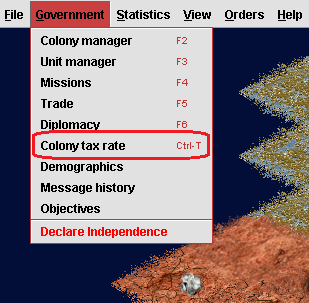
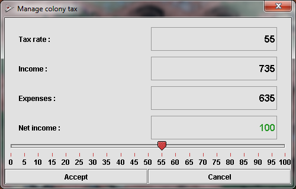

Colony tax
Taxes can be collected from Mars colonists as an income for the
colonial governments. At the end of each month, a colonist in the free
workforce pool of an individual colony will generate 3 credits multiplied
by the current colonial tax rate.
For example, if there are 10 colonists in the free workforce pool of a
colony and the current tax rate is %50, then an income of 15 credits will
come from colonial tax. Likewise 20 colonists will produce 60 credits each
month if the colonial tax rate is %100.
Imposing this tax on Martian colonists will have a negative impact on their
production since it will decrease with the ratio of the applied tax.
Normally, 10 colonists in the free workforce pool will produce 10 production
points each month if the colonial tax is %0; this will decrease to 5
production points if a tax of %50 is applied. Imposing colonial tax will
cause colonies to have longer completion times for building improvements or
units.
Colonial tax is a weaker income alternative when compared with income from
exporting goods; it is not recommended unless there is an emergency need for
credits or exporting goods is not possible due to Martian war of
independence. Normally, a colonist mining silica, or producing steel will
provide a higher income for Mars. Some colony improvements like trading post
or market increase tax income from a colony.
Manage colony tax dialog
"Manage colony tax" dialog can be used to set colony tax rate; this dialog
displays "Tax rate", "Income" (from colony tax only), "Expenses" and
resulting "Net income". The dialog can be opened by using the shortcut
Ctrl+T or Tax menu item under Government menu.

